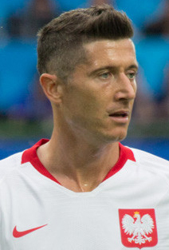

Cristiano Ronaldo

Cristiano Ronaldo właśc. Cristiano Ronaldo dos Santos Aveiro ur. 5 lutego 1985 w Funchal –
portugalski piłkarz, występujący na pozycji napastnika w saudyjskim klubie Al-Nassr oraz
w reprezentacji Portugalii, której jest kapitanem. Złoty medalista Mistrzostw Europy
2016, srebrny medalista Mistrzostw Europy 2004. Uczestnik Mistrzostw świata: 2006,
2010, 2014, 2018, 2022 i Mistrzostw Europy: 2008, 2012, 2020.
Klubową karierę rozpoczął w wieku ośmiu lat, grając w małym klubie CF Andorinha. W wieku
10 lat trafił do jednego z największych klubów Madery, Nacionalu, a w 1997 – do
akademii Sportingu. W 2003 podpisał kontrakt z Manchesterem United. Już w pierwszym
sezonie zdobył z klubem Puchar Anglii, natomiast w kolejnych latach pomógł United
w zdobyciu trzech z rzędu tytułów mistrzowskich, dwóch Pucharów Ligi, Tarczy
Wspólnoty, wygraniu Ligi Mistrzów, a także klubowego mistrzostwa świata.
Robert Lewandowski

Robert Lewandowski (ur. 21 sierpnia 1988 w Warszawie) – polski piłkarz, występujący na
pozycji środkowego napastnika w hiszpańskim klubie FC Barcelona oraz w reprezentacji
Polski, której jest kapitanem.
Uważany za jednego z najlepszych piłkarzy swojego pokolenia na świecie i jednego z
najlepszych środkowych napastników w historii piłki nożnej[1][2][3]. Zdobywca ponad 600
goli w seniorskich rozgrywkach klubowych i reprezentacyjnych. Po zdobyciu korony
króla strzelców polskiej trzeciej i drugiej ligi w 2008 trafił do Lecha Poznań, z którym sięgnął
po mistrzostwo Polski i tytuł króla strzelców Ekstraklasy. W 2010 został
zawodnikiem Borussii Dortmund, w barwach której zdobył dwa krajowe tytuły, koronę króla
strzelców Bundesligi i dotarł do finału Ligi Mistrzów UEFA. W 2014 przeniósł się do
Bayernu Monachium, z którym zdobywał mistrzostwo Niemiec w każdym z ośmiu
rozegranych sezonów, poza tym sześciokrotnie został najlepszym ligowym strzelcem i
przekroczył barierę 250 goli w Bundeslidze, dokonując tego najszybciej w historii. W 2020
sięgnął z klubem po potrójną koronę, wygrywając mistrzostwo, puchar Niemiec i
rozgrywki Ligi Mistrzów UEFA, ponadto został królem strzelców wszystkich rozgrywek, w
których występował[4]. W 2021 sięgnął z Bayernem po Klubowe mistrzostwo świata, a
sam został wybrany najlepszym zawodnikiem turnieju. Jest drugim najlepszym
strzelcem w historii Bundesligi, najskuteczniejszym obcokrajowcem w Bundeslidze, a także
rekordzistą pod względem goli strzelonych w jednym sezonie Bundesligi (41 bramek). W
2022 za 45 milionów euro opłaty stałej jako najdroższy polski piłkarz w historii został
zawodnikiem hiszpańskiego klubu FC Barcelona. W sezonie 2022/2023 zdobył z klubem
mistrzostwo Hiszpanii oraz Superpuchar Hiszpanii, zostając królem strzelców obu
rozgrywek.
Lionel Messi

Lionel Messi, Leo Messi, właśc. Lionel Andrés Messi Cuccittin– argentyński piłkarz,
występujący na pozycji napastnika lub ofensywnego pomocnika w amerykańskim klubie
Inter Miami oraz w reprezentacji Argentyny, której jest kapitanem. Złoty medalista
Mistrzostw Świata 2022.
Karierę seniorską rozpoczął w młodzieżowym zespole FC Barcelony (FC Barcelona C), skąd
przeszedł do drugiego zespołu katalońskiego klubu. W 2004 zanotował debiut dla
pierwszej drużyny[2]. W sezonie 2008/2009 stał się kluczowym piłkarzem swojej drużyny[3],
która po raz pierwszy w historii sięgnęła po potrójną koronę, zdobywając mistrzostwo
Hiszpanii, puchar Hiszpanii i rozgrywki Ligi Mistrzów UEFA. W sezonie 2014/2015
powtórzył osiągnięcie z 2008/2009. W 2018 został kapitanem FC Barcelony[4]. Pozostaje
zawodnikiem z największą liczbą strzelonych goli i występów w historii FC Barcelony[5]
[6]. Do 2021 zdobył z klubem 35 trofeów: 10 tytułów Mistrza Hiszpanii, cztery puchary
Ligi Mistrzów UEFA, siedem Pucharów Króla, ponadto siedmiokrotnie wygrał
Superpuchar Hiszpanii, trzykrotnie Superpuchar Europy UEFA i trzy razy Klubowe
Mistrzostwa Świata. W 2021 został zawodnikiem francuskiego klubu Paris Saint-Germain. W
barwach paryskiej drużyny rozegrał łącznie 58 spotkań, w których zaliczył 22 gole. Brak
awansu do finału Ligi Mistrzów UEFA oraz zawieszenie przez klub spowodowane
wyjazdem piłkarza do Arabii Saudyjskiej w 2023 roku[8], spowodowały, iż Messi zdecydował
się opuścić Paryż w ramach wolnego transferu. Po rozpatrzeniu ofert saudyjskiego Al-
Hilal, hiszpańskiej FC Barcelony oraz grającego w MLS Interu Miami, Lionel Messi podjął
decyzję o dołączeniu do tego ostatniego.